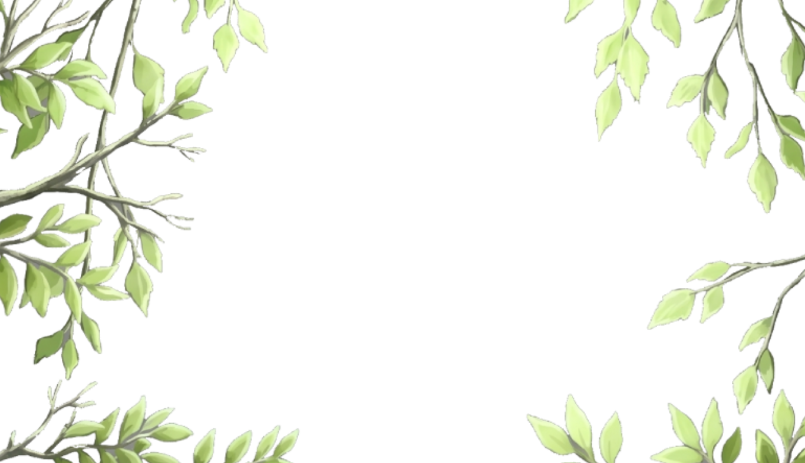
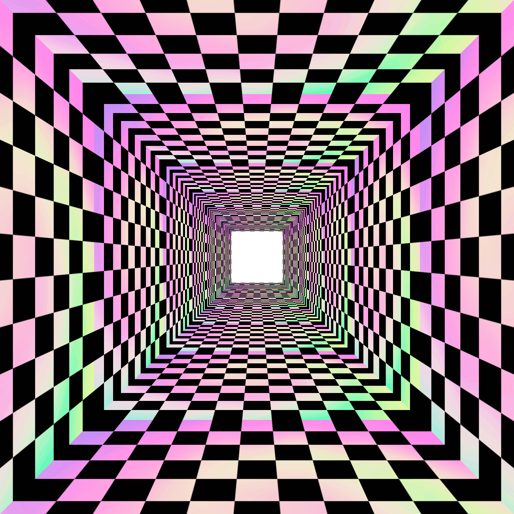

Susy Liu
BCG-trained consultant · interested in early-stage startups
I'm drawn to systems that shape how people think, decide, and navigate complexity. Step into an interactive space exploring my work, interests, and experiments.
I'm drawn to systems that shape how people think, decide, and navigate complexity.

open